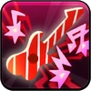

Toppings:


Dentro del horno chisporroteante, Rockstar Cookie descubrió el sonido del rock 'n' roll. ¡Se dio cuenta de que para conmover a la audiencia,
uno no sólo debe tener talento sino también sentir el verdadero Espíritu del Rock en su interior! Muchos éxitos legendarios se crearon con
esa filosofía en mente. Cada Cookie que ha visto actuar a Rockstar Cookie cambió para siempre El sonido ardiente! ¡El carisma abrumador!
"¡¿Estas listo para rockear?!"
Esta piedra contiene un pedazo del alma de Rockstar Cookie. Cuando lo sostienes en tus manos, casi puedes escuchar el rugido de las guitarras.


Rockstar Cookie interpreta un himno de rock, cura periódicamente el HP del equipo y aplica el beneficio de Espíritu de roca legendario,
el beneficio de Protección contra maldiciones y un beneficio de% CRIT para todo el equipo, excluyéndose a sí mismo en función de su
aumento de% CRIT de los Toppings equipados. Bajo Legendary Rock Spirit, el objetivo recuperará su HP cada vez que asesta un golpe crítico.